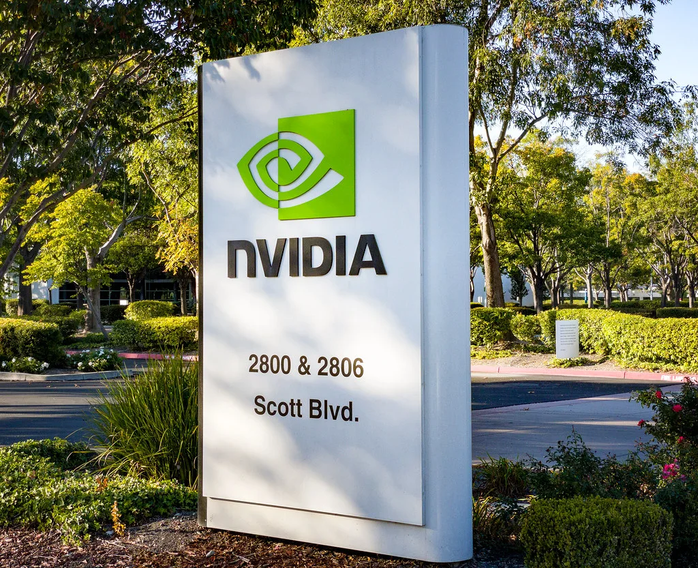
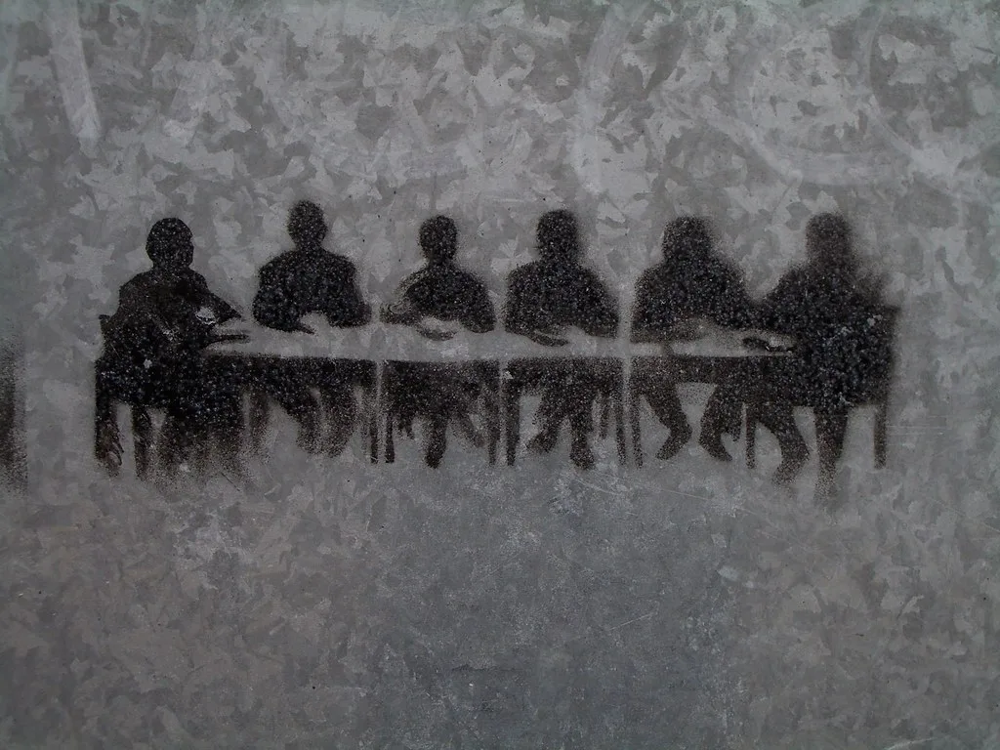

스콧 베선트 미국 재무장관이 젠슨 황의 사임으로 공석이 된 엔비디아 최고경영자(CEO) 자리를 회사 바깥 인물로 채워야 한다고 공개적으로 주장했다. 베선트 장관은 15일(현지시간) 폭스뉴스 인터뷰에서 엔비디아에는 대대적인 쇄신이 필요하며, 이사회가 새 리더를 찾을 때 외부로 눈을 돌려야 한다는 취지로 말했다. 행정부의 경제 사령탑이 민간 기업의 최고경영자 인선에 대해 이처럼 구체적으로 의견을 낸 것은 이례적이라는 평가가 나온다.
베선트 장관은 인선 문제에 그치지 않고 엔비디아의 대중국 수출 관행도 겨냥했다. 그는 앞으로 10일 안에 엔비디아 이사회와 외부 법률 자문으로부터 답변을 받아야 한다며, 회사가 싱가포르의 페이퍼컴퍼니와 관련한 경고 신호를 무시했는지 확인해야 한다고 강조했다. 미국의 대중국 첨단 반도체 수출 통제를 고의로 피해 갔는지도 따져 봐야 한다는 입장이다. 다만 새로운 입법이 필요하다는 주장에는 선을 긋고, 이미 마련된 규정을 제대로 집행하면 된다고 말했다.

이번 발언의 배경에는 지난 12일 젠슨 황 전 CEO의 사임이 있다. 황 전 CEO는 중국 정보기관과 연계됐다는 의혹을 받는 인물과의 사적 관계가 드러난 데 이어 사내 임원과 관련된 추가 의혹까지 제기되면서 자리에서 물러났다. 엔비디아 이사회는 후임자가 정해질 때까지 콜레트 크레스 최고재무책임자(CFO)가 임시 CEO를 맡는다고 밝혔다. 사임 소식이 전해진 직후 엔비디아 주가는 장 초반 13% 안팎 급락한 것으로 전해졌다.
베선트 장관이 이 사안을 단순한 개인 추문이 아닌 국가안보 문제로 보고 있다는 해석도 나온다. 엔비디아는 인공지능(AI) 학습과 추론에 쓰이는 고성능 그래픽처리장치(GPU) 시장을 사실상 주도하는 기업이다. 미국 정부는 첨단 AI 칩이 중국 군사·감시 분야로 흘러가는 것을 막기 위해 수출 통제를 강화해 왔는데, 제3국을 거친 우회 수출 의혹이 사실로 확인되면 정책의 실효성 자체가 흔들릴 수 있다는 우려가 깔려 있다.
차기 CEO 후보군을 두고도 관심이 쏠린다. 사내에서는 GPU 범용 연산 플랫폼 쿠다(CUDA) 개발을 이끈 이언 벅 부사장과 임시 CEO인 크레스 CFO가 거론된다. 외부 인사로는 영국 반도체 설계기업 Arm의 르네 하스 CEO와 AMD의 리사 수 CEO 등이 언급된다. 엔비디아가 하스 CEO와 접촉했다는 보도도 나왔지만, 회사 측은 아직 누구와도 공식적으로 접촉하지 않았다고 해명했다.

반대편에서는 젠슨 황의 복귀를 바라는 목소리도 나온다. 일부 주요 투자자가 황 전 CEO의 복귀를 요구하고 있고, 주주와 직원을 중심으로 복귀 청원도 확산되고 있다는 보도가 이어졌다. 창업자 한 사람에게 기술 비전과 고객 관계가 크게 집중돼 있던 만큼, 외부 인사가 그 공백을 단기간에 메우기 어렵다는 시각이다. 베선트 장관의 발언은 이런 복귀론에 사실상 제동을 건 것으로 풀이된다.
결국 공은 엔비디아 이사회로 넘어갔다. 베선트 장관이 제시한 10일 시한 안에 이사회가 수출 관련 의혹에 어떤 설명을 내놓을지, 그리고 내부 승계와 외부 영입 가운데 어느 쪽을 택할지가 당분간 시장의 최대 관심사가 될 전망이다. 엔비디아 경영 공백이 길어질 경우 한국 메모리 반도체 기업을 비롯한 글로벌 AI 공급망 전반에도 불확실성이 커질 수 있어, 국내 업계도 상황을 예의주시하고 있다.